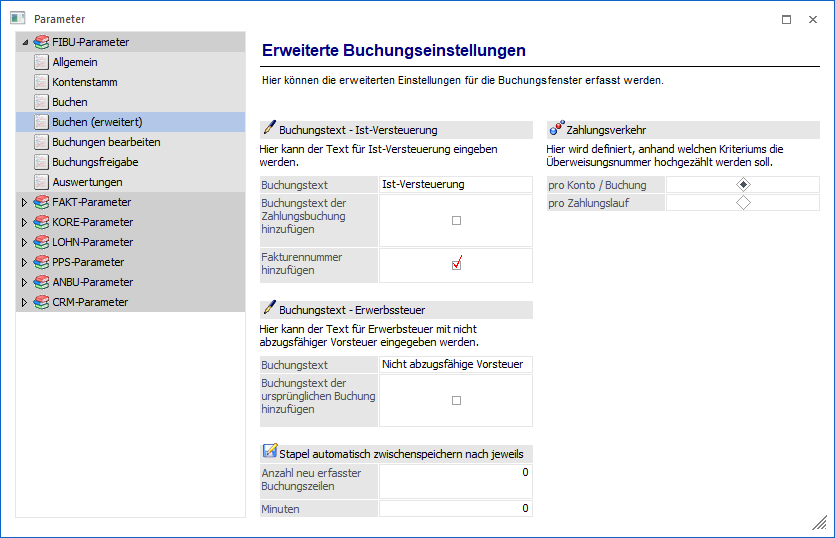
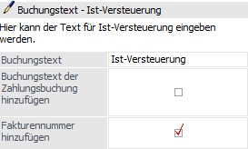
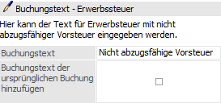
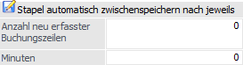
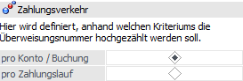

Über den Bereich "FIBU-Parameter - Buchen (erweitert)" können allgemeine Einstellungen für das Buchen vorgenommen werden.
Hinweis
Standardmäßig wird das Fenster in einem "Lesemodus" geöffnet, d.h. es können die bestehenden Einstellungen kontrolliert, Änderungen allerdings nicht durchgeführt werden. Hierfür muss zunächst mit Hilfe des Buttons "Bearbeiten" der "Bearbeitungsmodus" aktiviert werden. Alternativ kann diese Aktivierung auch über das Kontextmenü der rechten Maustaste (Funktion "Applikation xxx bearbeiten") erfolgen.

Buchungstext - Ist-Versteuerung

Ø Buchungstext
Hier kann ein fixer Buchungstext für die Buchungen mit Steuerzeilen "nicht fällige USt" und pagatorische Buchungen festgelegt werden, welcher bei der Zahlungsbuchung zusätzlich automatisch in den Buchungstext übernommen wird.
Ø Buchungstext der Zahlungsbuchung hinzufügen
Der zuvor definierte Buchungstext wird bei der Zahlungsbuchung bei pagatorischen Buchungen zusätzlich in den Buchungstext übernommen.
Ø Fakturennummer hinzufügen
Die Fakturennummer wird bei der Zahlungsbuchung von pagatorischen Buchungen in den Buchungstext übernommen.
Buchungstext - Erwerbssteuer

Ø Buchungstext
Hier wird der Buchungstext für die "Erwerbsteuer mit nicht abzugsfähiger Vorsteuer" eingetragen.
Ø Buchungstext der ursprünglichen Buchung hinzufügen
Damit wird der Buchungstext der ursprünglichen Buchung übernommen.
Stapel automatisch zwischenspeichern nach jeweils

Das automatische Zwischenspeichern von Buchungsstapeln kann für die Programme Buchen Dialog-Stapel, Buchen Dialog-Stapel Quick und Buchen Zahlungsmittelkonten eingestellt werden.
Hinweis
Beim automatischen Zwischenspeichern wird ein Buchungsstapel mit der Bezeichnung "AutoSave - Benutzer - Datum Uhrzeit" angelegt, der im Buchungsprogramm geladen werden kann.
Ø Anzahl neu erfasster Buchungszeilen
Das automatische Zwischenspeichern des Buchungsstapels erfolgt jeweils nach der eingetragenen Anzahl neu erfasster Buchungszeilen seit der letzten Speicherung.
Per Default ist "0" eingetragen. Erst wenn eine Anzahl eingetragen ist, erfolgt die automatische Zwischenspeicherung.
Wird ein bereits existierender Buchungsstapel bearbeitet, erfolgt das automatische Zwischenspeichern nur, wenn neue Buchungszeilen angefügt werden.
Ø Minuten
Das automatische Zwischenspeichern des Buchungsstapels erfolgt jeweils nach der eingetragenen Anzahl an Minuten seit der letzten Speicherung.
Per Default ist "0" eingetragen. Erst wenn eine Anzahl an Minuten eingetragen ist, erfolgt die automatische Zwischenspeicherung.
Wird ein bereits existierender Buchungsstapel bearbeitet, erfolgt das automatische Zwischenspeichern nur, wenn neue Buchungszeilen angefügt werden.
Zahlungsverkehr

Ø Überweisungsnummer hochzählen
ü pro Konto / Buchung
Die
Überweisungsnummer im Bankenstamm wird pro Buchung hochgezählt und als
Belegnummer und Sachkonten-OP-Referenznummer für die erzeugten Buchungen
verwendet.
ü pro Zahlungsstapel
Für alle
Buchungen eines Stapels wird dieselbe Überweisungsnummer aus dem Bankenstamm als
Belegnummer und Sachkonten-OP-Referenznummer verwendet. Der
Sachkonten-OP-Referenznummer wird ein "Z-" vorangestellt.